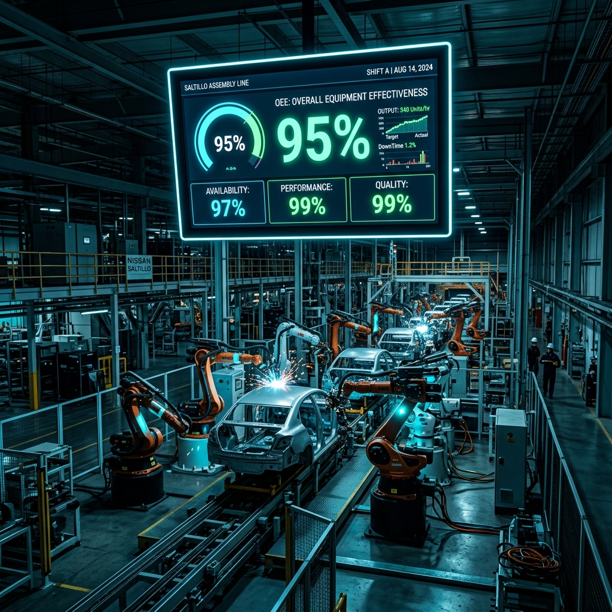

Ingeniería de PLC en Saltillo: Arquitectura de Control y Estrategias para Maximizar el OEE
Publicado por el Equipo de Ingeniería de Robologix Automation | Coahuila, México
Resumen Técnico de Ingeniería:
En las plantas de manufactura del corredor Saltillo – Ramos Arizpe – Derramadero, la eficiencia de una línea automatizada no depende únicamente del hardware instalado, sino de la arquitectura del código de PLC. Un diseño modular bajo la norma IEC 61131-3, combinado con estructuras de datos organizadas (UDTs, AOIs), diagnostica fallas de sensores en milisegundos, erradica los microparos de proceso e incrementa directamente la Eficiencia General de los Equipos (OEE).

Panel de control industrial con arquitectura modular de PLC en planta automatizada.
1. El Desafío del Tiempo Real en las Líneas de Coahuila
Las líneas de ensamble, estampado y soldadura en el clúster automotriz de Saltillo operan bajo márgenes de tiempo sumamente estrechos. Cuando un controlador industrial ejecuta programas monolíticos, sin estructurar o con rutinas de escaneo ineficientes, se generan cuellos de botella silenciosos y microparos que merman la producción diaria.
La ingeniería de control moderna aborda este reto mediante la fragmentación del programa en tareas periódicas y de evento, asegurando que la lógica crítica de seguridad y movimiento servo se procese a frecuencias deterministas (por ejemplo, ciclos de 2ms a 5ms).
2. Principios de Programación Modular de PLC (IEC 61131-3)
En Robologix Automation aplicamos metodologías de diseño de software industrial que facilitan la mantenibilidad del código por parte del personal de planta:
- Creación de Bloques Reutilizables (AOI / FB): Encapsulamiento de la lógica para motores, válvulas solenoide, pistones neumáticos y cilindros. Esto garantiza que cualquier cambio técnico se aplique de forma centralizada.
- Estructuras de Datos Definidas por el Usuario (UDT): Organización lógica de variables en arreglos limpios (Modo Manual, Modo Auto, Alarmas, Estado de Red, Trazabilidad) para simplificar la comunicación con paneles HMI y SCADA.
- Rutinas de Diagnóstico Avanzado de I/O: Generación automática de alarmas descriptivas que indican en pantalla el tag exacto y la ubicación física del sensor con falla, reduciendo el tiempo medio de reparación (MTTR).
3. Impacto Directo de la Lógica de Control en la Eficiencia OEE
El indicador OEE mide la Disponibilidad, Rendimiento y Calidad de la producción. Un código de PLC profesional optimiza cada una de estas variables:
Disponibilidad (Uptime)
Erradicación de enclavamientos cruzados erróneos que detienen la celda por falsas alarmas de sensores.
Rendimiento (Performance)
Sincronización milimétrica de movimientos coordinados en buses CIP Motion o EtherCAT.
Calidad (First Pass Yield)
Interlocks de validación previa mediante cámaras de visión artificial antes de autorizar el ciclo de ensamble.
4. Integración de Redes Industriales y Diagnóstico Preventivo
Los sistemas de control modernos en Saltillo requieren comunicar múltiples dispositivos en campo. Estandarizamos redes EtherNet/IP, PROFINET IRT y tecnología IO-Link para monitorear el desgaste físico de sensores inductivos, niveles de vibración en variadores y consumo de energía en tiempo real.
Metodología de Ingeniería Robologix Automation
Análisis de trazas de escaneo y re-ordenamiento de secuencias para arañar segundos valiosos por pieza.
Desarrollo de AOIs y UDTs bajo estándares automotrices probados en plantas Tier-1.
Atención presencial rápida en los parques de Saltillo, Ramos Arizpe y Arteaga.
Artículos Técnicos Relacionados:
¿Requieres Asesoría o Reestructuración de Código PLC en Coahuila?
En Robologix Automation somos ingenieros especialistas en optimización de programas PLC (Allen-Bradley, Siemens), desarrollo HMI y eliminación de paros de línea en Saltillo y Ramos Arizpe.
Hablar con un Ingeniero de Robologix